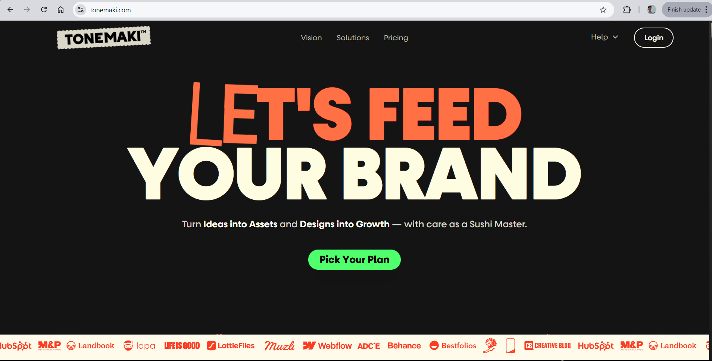

Reflecation of module Experience
In this page I will discuss about what I learned and what inspired me about the design and many other things
How did I find this module?
It's been and exiciting learning experience doing the whole thing. I learned so many thing doing this project like I had zero clue about how to make the website responsive, I learned about the grid layout and theres other many thing I learned
Design decision
The main inspiration for my website came from the website called tonemaki.com I'll say almost everything is inspired from this website from navigation style to background called and even hover effect for the navigation instead of orange color used in that website I decided to go for sky blue color which I thought is really appealing instead of orange
Validation Screenshot
Below are all the validation screenshot of the html and css